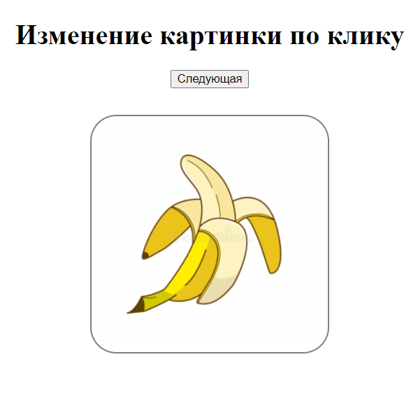

Change Image Click - JavaScript Task

Задание
При клике по кнопке менять изображение
Количество изображений не меньше 3
Для храниения пути к изображениям использовать массив
После последнего изображения переходить к первому
Демо
Шпаргалка
Github